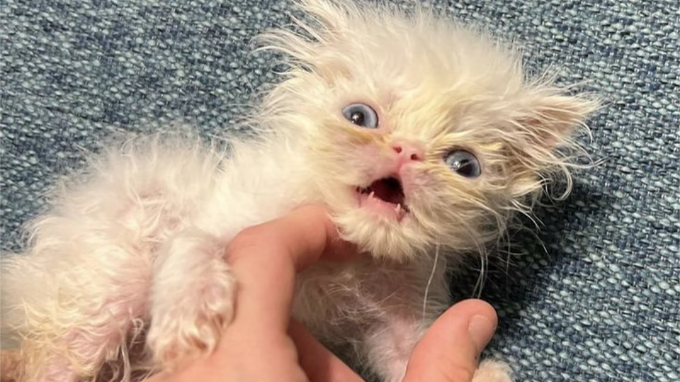

Meet Wisp, the 'Scrungly' Persian Kitten
Fact: Wisp has gained almost 800,000 followers and over 50 million likes on TikTok...
Rags to Riches Animal Rescue Inc. Received a sweet surprise after taking in a Persian cat, Gerald. On July 24th, 2023, RTRARI made a post on Instagram with the caption "Apparently Gerald has been keeping a big secret from us! We were told male and neutered well… that's not the case" And little wisp was born!
What's happening
The 3.5-month-old Persian kitten from Tampa Bay has taken over the internet with her scroungy fur, clumsy gait and sassy, soprano mews.
Link out here >The intrigue
Maybe it's Amerosa's hilarious video directing, taking viewers through Wisp's bath time or stitching together clips of her more talkative moments
Link out here >The latest
Rags to Riches has peddled the fame into Wisp-themed T-shirt sales and fundraising campaigns to benefit the rescue, which Amerosa runs with the help of a few volunteers.
Link out here >